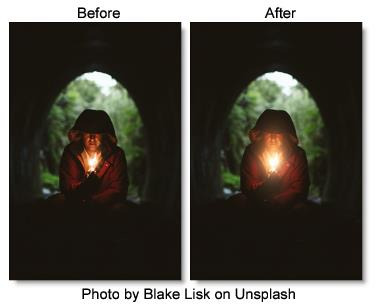

ReLight
Description
Light can be added to a scene where none existed before. A complete set of light source controls allow you to adjust the light just as you would at the time of shooting.
Category
Light.
Light
Blend
Determines the blend mode to be used to add the light.
Add
The light is added to your image.
Screen
The light is combined with the image using a Screen blend mode. This looks kind of like the Add blend mode, but highlights are retained.
Brightness
Sets the intensity of the light.
Displacement
Displaces the light source by the luminance values of the image. This “fakes” the effect of light wrapping over objects in the image.
Blur
Sets the softness of the light.
Gels
Photographers, cinematographers and lighting designers use colored filters or gels in front of lights. Whatever mood you wish to create, we have the colors needed to achieve the effect. Select one of the Gels presets from the pop-up menu.
Color
Sets the color of the light through the use of a standard color picker.
Light Source
Blend
The light source can be added to the matte using a variety of Blend modes. Go to
Blend Modes for explanations of the various modes.
I like the Multiply blend mode for combining the light source with the matte because it only puts the light source within the areas of the matte.
Opacity
Sets the opacity of the light source.
Aspect
The aspect ratio of the light source.
Radius
The un-blurred radius of the light source.
Falloff Radius
The blurred edge radius.
Falloff
Moves the falloff towards the light centerpoint.
Invert
Inverts the light source.
Transform
Transform your light pattern using Position, Scale, Rotate, Corner-Pin, Shear and Crop controls. Go to the
Transform section of Common Filter Controls to see how the Transform Controls work.
Matte
A matte can be used to limit the area of added light. Wherever there is white in the matte is where the light will be added. When using ReLight, it is usually helpful to blur the matte. Go to the
Matte parameters to see how they work.
Note: Light Source > Blend must be set to something other than Shape Only for the Matte controls to be active.